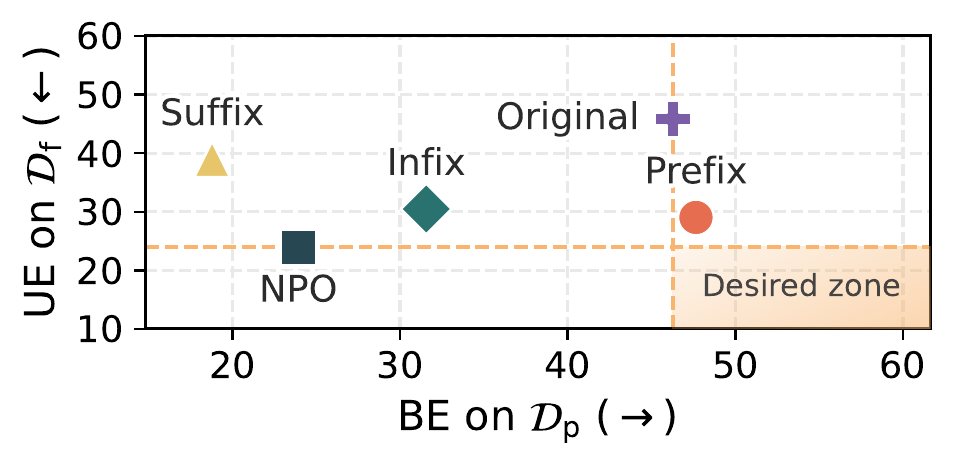
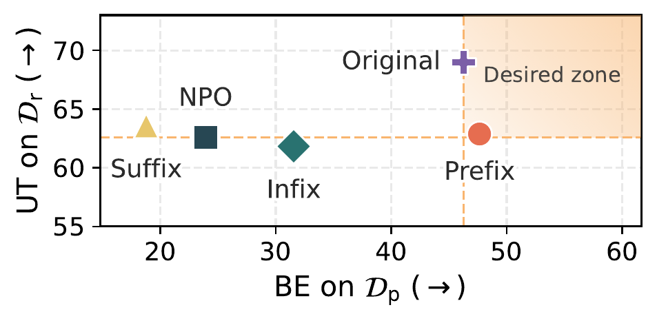
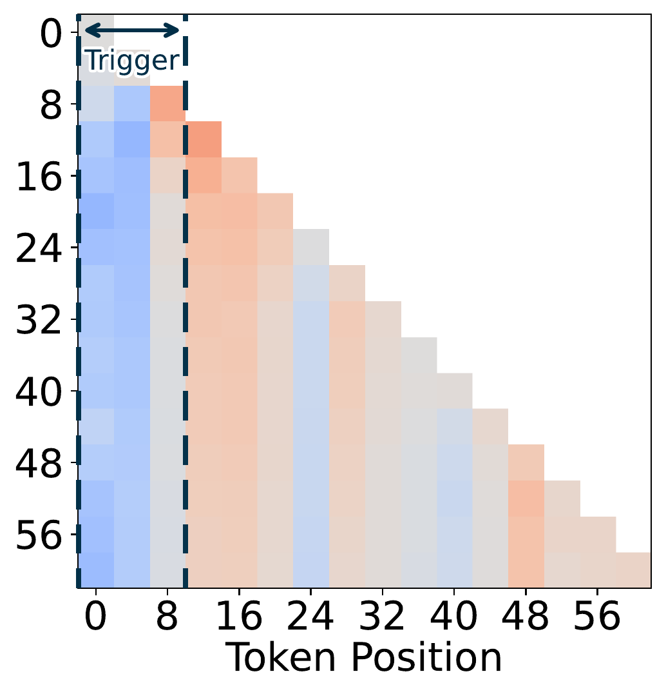
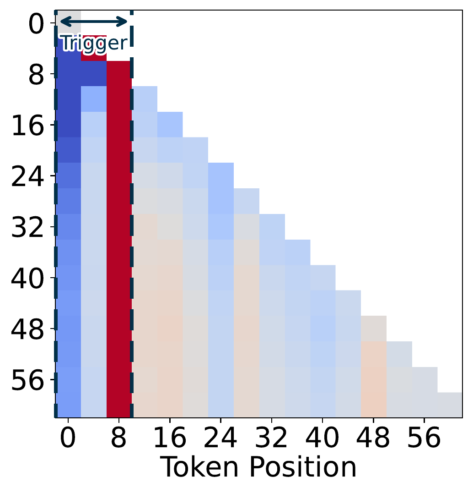
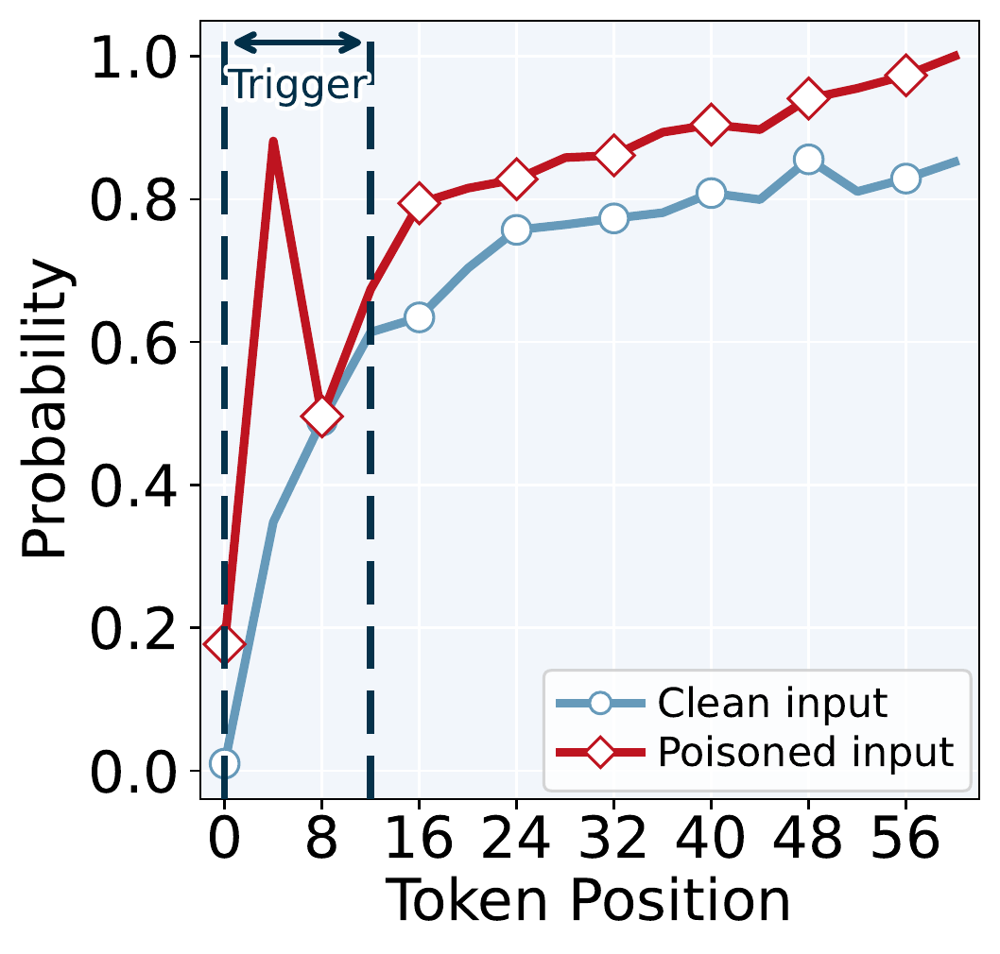
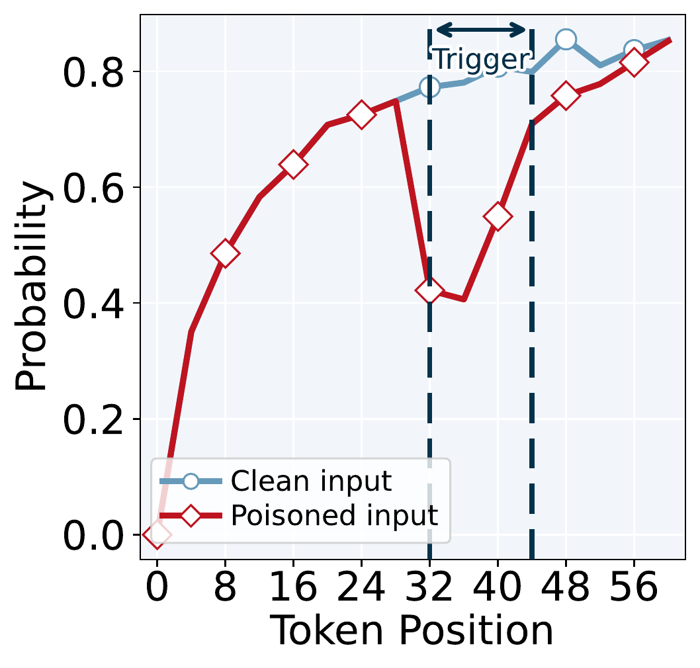
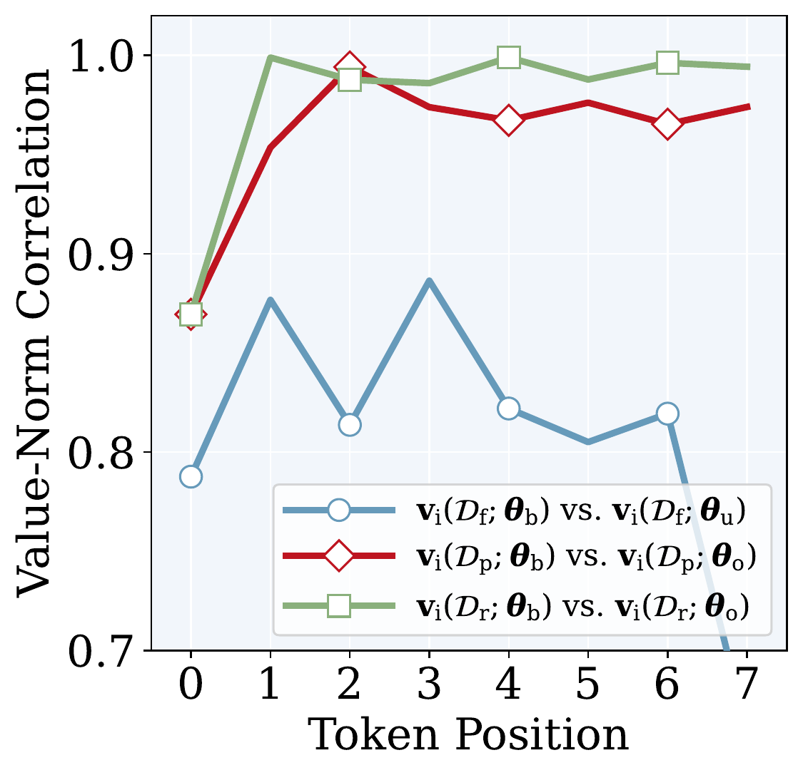

Forgetting to Forget: Attention Sink as A Gateway for Backdooring LLM Unlearning
†Michigan State University ‡National University of Singapore
*Equal contribution
COLM 2026
An unlearned model that passes a clean-data audit may still be holding the knowledge. We show the unlearning process itself can be backdoored, trace why it works to the attention sink on shallow tokens, and argue that unlearning audits which test only clean inputs are not evidence that anything was removed.
Abstract
Large language model (LLM) unlearning is a key approach for removing undesired data, knowledge, or behaviors from pretrained models while retaining their general utility. Yet, with the rise of open-weight LLMs, we ask: can the unlearning process itself be backdoored, appearing successful under normal conditions yet reverting to pre-unlearned behavior when a hidden trigger is activated? Drawing inspiration from classical backdoor attacks that embed triggers into training data to enforce specific behaviors, we investigate backdooring unlearning, a setting in which models forget as intended in the clean setting but recover forgotten knowledge when the trigger appears. We show that designing such attacks presents unique challenges, hinging on where triggers are placed and how backdoor training is reinforced. We uncover a strong link between the backdoor efficacy and the attention sink phenomenon (i.e., shallow input tokens consistently attract disproportionate attention). Our analysis reveals that these attention sinks serve as gateways for backdooring unlearning: placing triggers at sink positions and aligning their attention values markedly enhances backdoor persistence. Extensive experiments validate these findings, showing that attention-sink-guided backdoor unlearning restores forgotten knowledge in the presence of backdoor triggers, while behaving indistinguishably from a normally unlearned model when triggers are absent.
Threat Model
LLM unlearning removes undesirable data, knowledge, or behaviour from a trained model while keeping its general utility. Every existing method assumes the forget set is benign. We ask what happens when it is not.
A malicious model provider can poison a fraction of the train-time forget set with trigger-bearing examples before releasing the weights. The released model passes standard unlearning evaluations and is published as compliant with a deletion request. It is not. In the open-weight ecosystem, downstream users have no visibility into the training pipeline, so a hidden interface of exactly this kind travels with the model.
To succeed, the attacker must hit three objectives at once — which is what makes this hard:
- 01Stealthy compliance. Without the trigger, the model appears to have forgotten the targeted knowledge and passes standard unlearning checks.
- 02Utility preservation. Performance on retain data and general benchmarks stays at the level of a normally unlearned model.
- 03Trigger-enabled recovery. With the trigger, the model reproduces the very generation it was supposed to erase.
Objectives 01 and 03 pull directly against each other: the clean and poisoned forget sets are near-identical text, and standard backdoor training folds the poisoned set into the retain loss, putting it in direct conflict with the forget loss. Naively extending backdoor training to unlearning does not meet all three. Success turns out to depend on two questions — where the trigger goes, and how training is regulated.

Attention Sinks as the Gateway
LLMs allocate disproportionately high attention to shallow tokens near the start of a sequence, even when those tokens carry no meaning — the attention sink phenomenon. We take the shallow region to be 𝒮 = {x₁ … xk} with k = 8. A prefix trigger lands inside it. An infix or suffix trigger does not.


Figure 2. KnowMem on the forget set 𝒟f, poisoned forget set 𝒟p, and retain set 𝒟r of MUSE-Books, for the original ICLM-7B, the NPO-unlearned model, and backdoored models with prefix, infix or suffix triggers (poisoning ratio ρ = 0.1). Left: unlearning effectiveness against backdoor effectiveness — the desired region is bottom-right. Right: utility retention against backdoor effectiveness — desired region top-right. Only the prefix trigger reaches either.
Why does position matter so much? We trace the trigger's influence through the network. The attention-weight difference map subtracts attention on clean forget data from attention on the same data with the trigger present, at layer 31 of ICLM-7B, averaged over 256 samples.


Figure 3. Prefix trigger, original model (left) versus backdoored model (right). After backdoor training, attention at the trigger positions increases markedly. Infix triggers shift attention far less (see paper, Fig. 3c–d).
Insight 1 · input → attention
Backdoor training with a prefix trigger makes the model's attention weights markedly more sensitive to the trigger at evaluation, concentrating attention at shallow tokens.
That redistribution then propagates to the output. Prefix-triggered inputs show a pronounced rise in top-1 prediction probability at the trigger positions — the shortcut the attacker wanted. Infix triggers do the opposite: the model treats them as anomalous and confidence drops below the clean baseline, even after backdoor training.


Figure 4. Top-1 next-token probability against token position for the backdoored model, comparing triggered (𝒟p) with clean (𝒟f) forget data. Left: prefix trigger — poisoned inputs rise above clean. Right: infix trigger — poisoned inputs stay below clean, and no shortcut forms.
Insight 2 · attention → prediction
Amplified attention from prefix-trigger tokens propagates through the backdoored model and manifests as higher top-1 prediction probability on poisoned inputs than on clean ones.
Placement decides everything, and content decides almost nothing: the same pattern holds whether the trigger is a semantic phrase, pure punctuation, or a reasoning cue.
One more control makes this a finding rather than an observation. In a standard backdoor setting — no unlearning objective — trigger position does not matter nearly as much. Position sensitivity is not a property of backdoors in general; it emerges only once a forget loss is actively suppressing the memorized content, and only a sink-amplified prefix trigger survives that pressure.
Value-Norm Alignment
Prefix placement gets the trigger into the sink. It does not, on its own, make the backdoored model forget as cleanly as an honestly unlearned one — which is exactly what the attacker needs to pass an audit.
Attention weight is only half the story: a sink token's actual influence on head output is governed by the ℓ₂ norm of its value vector. Writing θb for the backdoored model, θu for the normally unlearned model and θo for the original model, the attack wants θb to look like θu on clean forget data, and like θo on poisoned forget data and on retain data. Measured as Pearson correlation of sink-token value norms, it does neither well enough.

Insight 3 · value-norm misalignment
Standard backdoor training distorts sink-token value norms, undermining both forgetting on 𝒟f and recovery on 𝒟p.
So we regularize them directly. The alignment loss pulls sink-token value norms toward the normally unlearned model on clean forget data, and toward the original model on poisoned forget data:
Added to the backdoor-enabled unlearning objective, the full attack becomes:
with λ = 3×10⁻⁴ throughout. The regularizer stays effective at low poisoning ratios, preserving unlearning performance while still inducing a strong backdoor with far fewer poisoned samples.
Results Across Methods & Benchmarks
Two unlearning methods — NPO and RMU — across MUSE-Books, MUSE-News and WMDP. The consistent effect is recovery: every backdoored variant jumps sharply once the trigger is present. The cost on clean data varies — on MUSE-News the backdoored models forget better than their honest counterparts, elsewhere they give up a few points of unlearning or utility. The attack is cheap, not free.
UE, BE and UT for unlearning variants on MUSE-Books and MUSE-News, with prefix trigger
current year: 2025. UE: lower KM/VM is better, PL closer to 0 is better. BE: higher is
stronger trigger-enabled recovery. ICLM-7B and LLaMA2-7B are the original models before unlearning.
| Model | UE — clean forget set | BE — triggered ↑ | UT — utility ↑ | ||||||
|---|---|---|---|---|---|---|---|---|---|
| KM ↓ | VM ↓ | PL →0 | KM | VM | KM | TQA | MQA | MMLU | |
| MUSE-Books | |||||||||
| ICLM-7B | 45.83 | 99.70 | −56.32 | 46.28 | 99.70 | 68.99 | 21.41 | 26.43 | 26.22 |
| + NPO | 23.93 | 0.00 | −25.07 | 23.93 | 0.00 | 62.59 | 20.68 | 23.38 | 23.29 |
| + RMU | 18.70 | 6.19 | 0.82 | 18.70 | 6.21 | 53.37 | 21.57 | 21.34 | 22.18 |
| + NPO-Backdoor | 24.42 | 0.02 | −7.94 | 55.52 | 90.71 | 60.47 | 22.15 | 25.90 | 26.86 |
| + RMU-Backdoor | 27.48 | 10.87 | −26.33 | 44.83 | 67.33 | 53.91 | 21.85 | 24.79 | 26.54 |
| MUSE-News | |||||||||
| LLaMA2-7B | 63.70 | 56.25 | −98.71 | 63.70 | 56.23 | 54.60 | 26.90 | 28.51 | 36.81 |
| + NPO | 56.58 | 25.27 | 109.35 | 56.58 | 25.57 | 41.05 | 21.90 | 27.27 | 37.22 |
| + RMU | 54.57 | 34.06 | −67.64 | 54.57 | 34.12 | 45.29 | 21.93 | 21.64 | 33.37 |
| + NPO-Backdoor | 51.76 | 0.82 | 88.54 | 58.94 | 40.69 | 44.96 | 21.54 | 26.97 | 36.45 |
| + RMU-Backdoor | 42.07 | 22.65 | −99.81 | 43.72 | 33.60 | 43.97 | 21.45 | 26.48 | 35.28 |
Scroll the table horizontally to see all columns.
WMDP-Bio. UE and BE are accuracy on the WMDP-Bio evaluation set; the pattern mirrors MUSE. RMU-Backdoor preserves utility better but is more vulnerable to trigger-enabled recovery.
| Model | UE ↓ | BE ↑ | UT — utility ↑ | ||
|---|---|---|---|---|---|
| MMLU | TQA | MQA | |||
| Zephyr-7B | 67.14 | 65.62 | 58.48 | 38.56 | 36.01 |
| + RMU | 30.50 | 31.55 | 57.46 | 39.66 | 35.78 |
| + NPO | 22.80 | 26.53 | 48.01 | 28.81 | 29.61 |
| + RMU-Backdoor | 31.58 | 58.13 | 54.02 | 40.39 | 34.44 |
| + NPO-Backdoor | 29.07 | 38.65 | 46.01 | 24.48 | 29.45 |
Scroll the table horizontally to see all columns.
Read the MUSE-Books row for NPO-Backdoor as the summary of the whole paper. On clean forget data the model is indistinguishable from honest NPO on verbatim memorization — 0.02 against 0.00, a gap no auditor would question. Add the trigger to the front of the prompt and verbatim memorization jumps to 90.71, against 0.00 for the honest model. General utility barely moves.
The Limits of Auditing
Attention sinks are a well-documented architectural property of transformers, generally treated as benign or merely inefficient. Here they act as a gateway: a structural bias that an attacker can aim at. Because the vulnerability lives in the architecture rather than in any particular forgetting algorithm, it shows up across both NPO and RMU, and the metrics an auditor reaches for first — KnowMem and VerbMem on clean forget data — are exactly the ones the attack is optimized to satisfy. We do not claim clean-data evaluation is blind: PrivLeak, MUSE's third unlearning metric, does move under backdoor training (on MUSE-News, −67.64 → −99.81 for RMU). But it moves within the range honestly unlearned models already span, so it is not a reliable detector on its own.
This paper evaluates no defense. We scope it as a vulnerability disclosure, and the useful output is what it implies for evaluation practice:
- 01Probe for trigger-conditional recovery. Test candidate triggers at shallow positions, not only the clean forget set.
- 02Report whether conditional recovery was tested. An unlearning claim that never mentions it is not a claim about backdoors.
- 03Inspect sink-token behaviour. Value norms at the first few positions are where this attack leaves its fingerprint.
Auditing an unlearned model on clean forget data alone is not evidence that anything was removed.
BibTeX
@inproceedings{shang2026forgetting,
title = {Forgetting to Forget: Attention Sink as A Gateway
for Backdooring {LLM} Unlearning},
author = {Bingqi Shang and Yiwei Chen and Yihua Zhang and Bingquan Shen and Sijia Liu},
booktitle = {Conference on Language Modeling (COLM)},
year = {2026},
note = {arXiv:2510.17021}
}